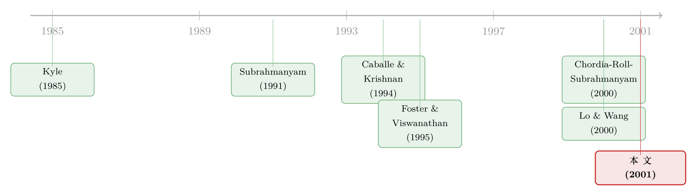

股票的『齐涨齐跌』，到底是从订单簿里长出来的吗？
本文读的是 Hasbrouck & Seppi (2001, Journal of Financial Economics)：他们把「共同因子」这把梳子依次梳过道指 30 只股票的收益、订单流、流动性三样东西，发现三者都有共性、但强度一路递减——单个共同因子能解释 15 分钟收益方差的约 21%，而订单流里的共性能解释收益共性的大约三分之二；至于流动性（价差、报价深度、价格冲击）的共性，则小得出奇，几乎被各家公司自己的特异波动淹没。
1 一个被崩盘反复提起、却很少被正面回答的问题
1987 年的股灾、1989 年的小型崩盘、1998 年的债市危机——每当市场出事，人们的第一反应几乎都一样：流动性整体「蒸发」了。不是某一只股票卖不动，而是所有人手里的东西在同一时刻一起变得难以脱手。这是一种朴素却强烈的直觉：市场的「干涸」是系统性的，是大家一起被卷进去的。
可是，如果你把这句话拆开来认真追问，会发现它其实压着好几个没被回答的问题。
首先，短期收益里到底有没有强烈的「齐涨齐跌」？这一条其实早有答案——自从有了资产定价，市场因子、系统性风险就是金融学的老生常谈。但微观层面的、15 分钟尺度的收益共性，是另一回事。
接着，一个更微妙、也更有趣的问题是：订单流（order flow）里有没有共同因子？现代微观结构理论一口咬定「交易是带信息的」——成交单里藏着有人知道、而别人不知道的东西（这正是 Kyle 模型的灵魂）。如果不同股票的买卖单在同一时刻一起涌来，那么收益的共性，会不会其实是订单流共性「传导」过去的结果？
然后，还有最被人挂在嘴边、却最少被正面测量的那一个：流动性本身有没有共同因子？买卖价差、报价深度、价格冲击系数——它们会不会像潮水一样，在所有股票上同涨同落？
Hasbrouck 和 Seppi 这篇 2001 年的论文，做的就是把这三个问题摆到一张桌子上，用同一套统计工具，一次性地量一遍。而真正让这篇文章好看的，不是它证明了「有共性」，而是它量出了共性的强弱次序——以及那个出人意料的结论：到了流动性这一层，所谓的「系统性」其实相当稀薄。
2 一个朴素却讲得通的框架
在动手算之前，作者先搭了一个极简的统计骨架。它不假设任何均衡、不指定谁是知情交易者，只是写下一个线性因子结构的「信念」：收益和订单流，背后都由一组共同变量加一组特异变量驱动。
我们一步步把它写出来。第一步，订单流的因子模型：
$$x_t = h F_t + e_t \tag{1}$$
这里 \(x_t\) 是 \(t\) 时刻 \(n\) 只股票的订单流列向量，\(F_t\) 是订单流的共同因子，\(h\) 是因子载荷矩阵，\(e_t\) 是各股票自己的特异扰动。配上正交假设 \(\mathbb{E}\,F_t e_t' = 0\)、\(\mathbb{E}\,e_{it}e_{jt}=0\ (i\neq j)\)，再加上标准化 \(\mathbb{E}\,F_t=0\)、\(\mathrm{Cov}(F_t)=I\)，就能推出订单流的协方差结构
$$\mathrm{Cov}(x_t) = h h' + \Omega_e,$$
其中 \(\Omega_e\) 是对角阵。这句话的直觉很干净：订单流的全部协方差，都被「共同因子 + 载荷」和「各自的对角噪声」两块瓜分了。如果共同因子的个数（\(F_t\) 的行数）远小于股票数 \(n\)，模型就是简约的。
第二步，收益也写成同样形状的因子模型：
$$r_t = u G_t + g_t \tag{2}$$
到这里都只是「统计描述」，没有任何因果。但真正关键的一步在于第三步——作者引入一条带因果味道的微观结构关系，把收益拆成「自己被订单流推动的部分」和「非交易部分」：
$$r_t = K x_t + u_t \tag{3}$$
\(K\) 是 \(n\times n\) 的价格冲击系数矩阵，\(\mathbb{E}\,x_t u_t' = 0\)。注意这是标准单变量价格冲击关系 \(r_{it}=\lambda_i x_{it}+u_{it}\) 的多元推广：\(K\) 的对角元就是每只股票「自己的」流动性系数 \(\lambda_i\)，而非对角元允许做市商在为 A 股票定价时，去观察并学习 B 股票的订单流。这是全文最有想象力的设定。
第四步，那个非交易残差 \(u_t\) 自己也可以有因子结构（比如货币政策这种对所有股票都有共同冲击的公共消息）：
$$u_t = m H_t + \omega_t \tag{4}$$
最后，把 (1) 和 (4) 代进 (3)，得到 \(r_t = K(hF_t+e_t)+(mH_t+\omega_t)\)，再与收益因子模型 (2) 对照，共同因子部分必须满足：
这条等式，就是整篇论文的「中心句」。它说：收益的共性可以有两个来源——一是订单流的共性经由 \(K\) 传导进价格（第二项），二是非交易公共消息本身的共性（第三项）。
这里还藏着一个容易被忽略、但作者特意点明的细节：订单流的因子结构并不会自动「穿透」到收益里。如果某个订单流因子是可观测且不含信息的，做市商完全可以选一个 \(K\)，让 \(Kh\) 的对应列变成零，从而把这个因子「清洗」掉。换句话说，价格里看到多少订单流共性，本身就是做市商「学习」行为的结果。
有了这个框架，论文要问的几个问题就变得非常具体了：收益与订单流的共性显著吗？两者的共同因子彼此相关吗？收益的共性里，有多少能归给订单流（第二项）、多少归给非交易残差（第三项）？以及，订单流的共同因子，到底是信息，还是跨股票的流动性冲击？
3 两把尺子：主成分与典型相关
要把上面这套因子结构量出来，最自然的想法是直接做因子分析（factor analysis）。作者偏偏没用——因为极大似然估计的因子模型要求分布假设（通常是正态），而在这种高频订单流数据上，正态假设实在不可信。于是他们退回到两件不需要分布假设的老工具。
第一把尺子是主成分分析（principal components analysis, PCA）：在一组变量内部，构造一个线性组合 \(a x_t\)，让它解释的方差最大。技术上，这个最大解释力就是 \(\mathrm{Cov}(x_t)\) 的第一特征值，\(a\) 是第一特征向量。因为这里所有变量要么全是订单流、要么全是收益，单位一致，作者用的是标准化变量（去掉时段效应后）的协方差矩阵——于是一个有用的标尺出现了：标准化变量的总方差恰好等于变量个数 \(n=30\)。如果 30 只股票完全正相关，第一特征值就会是 30；如果完全不相关，所有特征值都等于 1。
第二把尺子是典型相关分析（canonical correlation analysis）：它要的不是「组内」解释力，而是「两组之间」的协同。给定订单流向量和收益向量，第一对典型变量是那对让 \(\mathrm{Corr}(a x_t, b r_t)\) 最大的线性组合。
为什么两把尺子都要用？作者举了一个精巧的反例：假设有三个独立标准正态因子 \(F^x,F^y,z\)，前 \(n-1\) 对变量分别只依赖 \(F^x\) 和 \(F^y\)，唯独最后一对 \(x_{nt}=y_{nt}=z\)。这时 PCA 会判定 \((n-1)/n\) 的方差来自一个主成分，且 \(x\)、\(y\) 的主成分相互独立；可典型相关分析抓到的第一对典型变量却是 \(x_{nt},y_{nt}\)，它们完全相关、却与那两个主成分毫无关系。一组变量「内部最像」的方向，未必就是「两组之间最相关」的方向——这正是作者要分别去看「共性强不强」和「共性互不互通」的原因。
4 数据：道指 30 只股票，1994 年，每 15 分钟一帧
样本是经典的：NYSE 的 TAQ 数据库，取道琼斯工业平均指数（DJIA）的 30 只成分股，覆盖 1994 年的 252 个交易日。选这 30 只是有讲究的——既要是「先验上就可能存在指数化交易和共同信息」的大盘股，又要交易足够活跃，才能在高频上构造出近似同时的跨股票订单流。
时间被切成 9:30–9:45、9:45–10:00……一直到 15:45–16:00，每个交易日 26 个 15 分钟区间。为什么是 15 分钟？这是一个折中：太短（比如 1 秒），几乎没有股票是同时成交的，「同时订单流」无从谈起；太长，价格反过来影响后续下单的反馈效应（组合保险、正反馈策略）又会污染 (3) 式那种「订单流 → 价格」的单向解读。
收益用报价中点的对数差 \(r_{i,t}=\log(m_{i,t}/m_{i,t-1})\)。订单流则用 Lee-Ready 式的方法定号：成交价高于上一时刻中点记为正（主动买），低于记为负（主动卖），中点成交记零。作者构造了一整套订单流度量——带号的成交笔数、股数、金额，以及考虑到「价格冲击对规模是凹的」而特别引入的带号金额平方根（signed square root dollar volume, SSRD）；还按小（≤2,000 股）、中（2,001–10,000）、大（>10,000）拆开。所有序列都先按公司 × 时段标准化，把 Wood 等（1985）记录的那种日内时段效应（time-of-day effect）扣掉，这样剩下的共动才是「随机的」、而非「日历驱动的」。
5 第一层：收益的共性，是个参照系
先看最熟悉的收益。标准化收益的第一特征值是 6.32——也就是说，单个共同因子能解释 15 分钟收益总方差的 \(6.32/30 = `21\%`\)。第二、第三特征值都贴近 1，说明再多的共同因子可以忽略。这一条没什么悬念，它的作用是当参照系：接下来的订单流、流动性共性，都要拿它来比。
作者还顺手做了个显著性的粗估。若数据多元正态，样本特征值有已知的渐近分布（Morrison, 1976），按 \(n\approx 6{,}000\) 个观测算，收益第一特征值的标准误约为 \(\sqrt{2}\,(6.32)^2/6{,}000 \approx 0.12\)。哪怕考虑到正态假设被违反会低估标准误，6.32 相对 0.12 也「强烈暗示」统计显著。
6 第二层：订单流的共性，以及那个「三分之二」
接着，自然的问题是：订单流里有没有共同因子？答案是——有，而且小单、中单比大宗交易明显。这其实讲得通：两笔不同股票的大宗卖单就算同时到达，按大宗交易在「楼上市场」（upstairs market）撮合的机制，对手方很难在同一个 15 分钟里被找到并成交。
但订单流共性有多强？以 SSRD 为例，它的第一特征值是 4.06，对应 \(4.06/30 \approx `13.5\%`\) 的方差——明显弱于收益的 21%。
这里还要堵住一个一望即知的质疑：订单流的共性，会不会只是程序化交易（program trading）的影子？ 1994 年 NYSE 报告程序化交易占总成交量的 11.6%，而第一个订单流主成分解释了 \(2.36/30 \approx `7.8\%`\) 的方差——两个数字近得让人起疑。但作者用一个漂亮的小推导拆穿了这层巧合：成交量是带号订单流的绝对值，量的占比反映的是标准差之比、而非方差之比。设带号订单流 \(x_{it}=x^P_t+x^N_{it}\)，其中 \(x^P_t\) 是共同的程序化部分、\(\mathrm{Var}(x^P_t)=0.078\)，那么程序化交易在总量中的期望占比会收敛到 \(\sqrt{0.078}\approx `28\%`\)——远高于 11.6%。换句话说，订单流里观测到的共性，不可能只由报告的指数套利与程序化交易解释。（至于这种共性从哪儿来，作者引了 Edelen & Warner (1999) 的发现：共同基金的资金流在日度上与收益高度相关——若基金持的是分散组合，订单流的共性很可能部分来自基金的申赎流。）
现在到了全文最关键的一问：收益的共性里，有多少能归给订单流？ 这正是典型相关分析登场的地方。结果是：标准化收益与 SSRD 之间，能构造出第一典型相关高达 0.829 的一对线性组合。作为对照，如果每只股票的收益只与「自己」的订单流完美相关、而跨股票完全不相关，这个相关只会是 \(\sqrt{1/n}=\sqrt{1/30}=`0.183`\)。0.829 远大于 0.183——收益的共性与订单流的共性，是统计上紧紧缠在一起的。
把它量化成「占比」就更直白了。在典型冗余分析里，第一个收益典型变量解释了 20.6% 的收益方差；而SSRD 那一侧的典型变量，能解释 14.2% 的收益方差。两者一比，\(0.142/0.206 \approx 0.69\)——这就是摘要里那句「订单流的共性解释了收益共性大约三分之二」的出处。（用收益主成分的 21.0% 作分母也是同样的量级。）
这是本文最该被记住的数字。它不是说「订单流和收益相关」这种废话，而是给出了一个结构性的分解：在 15 分钟尺度上，股票收益之所以会「齐涨齐跌」，其中约 2/3 的共动，可以追溯到订单流的共同流动；剩下约 1/3，才是 (5) 式里那个非交易公共消息项 \(mH_t\)。交易，确实在为价格的系统性写脚本。
7 第三层，也是反转：流动性的共性，弱得出奇
到这里，故事的节奏一直在往「共性很重要」的方向走。可真正的反转，发生在第三层。
作者转去看流动性本身的共性——用报价导出的代理变量（买卖价差、报价深度/对数报价斜率 LQS），以及从交易里反推的价格冲击系数。一个温和的好消息是：报价类流动性代理确实有助于解释价格冲击的时间变动——在去掉时段季节性后，价差与报价规模能预测「这一时刻一笔成交会把价格推动多少」。这一步把「报价看得见的流动性」和「成交时才显形的深度」连了起来。
但共性呢？作者发现，这些流动性代理里的共同因子相对很小；推到价格冲击系数那一层，共同因子更小。在对价格冲击做的方差分解里，共同因子项只解释了不到 1.0% 的方差，而股票「自己的」流动性项解释了 3.7%；共同因子在「自有项」之上带来的增量解释力仅约 0.1%。即便把数字往高了取，结论也是同一个：流动性的（信息性）共性，被各公司的特异变动压得抬不起头。
这是一个克制而诚实的结论。它没有去附和「崩盘 = 系统性流动性蒸发」的流行叙事，而是说：在一个正常年份（1994）、一组最该有共性的大盘股上，流动性的同涨同落其实相当微弱。系统性的流动性危机或许真实存在，但它更像是尾部事件，而不是日常数据里那条粗壮的共同因子。
（关于流动性为何会跨股票同步、以及它在多大程度上由共用的做市商造成，可参见《你和我手里的股票，为什么会一起「变难卖」——因为我们共用了同一个做市商》；而把同样的「共性」追问搬到股债之间，则见《市场快「干涸」的那一刻：股与债的流动性，原来听的是同一个人》。）
8 文献脉络
把这条线索拉直了看，它是一棵从 Kyle 长出来的树。
最早的根，是 Kyle (1985) 的单资产策略交易模型——它给了「价格冲击 \(\lambda\)」这个统御一切的概念：知情交易者下单，做市商据此调价。但 Kyle 世界里只有一只资产。于是第一波扩展，是把它推向多资产市场：Subrahmanyam (1991)、Chowdhry & Nanda (1991)、Kumar & Seppi (1994)、以及 Caballe & Krishnan (1994) 接连引入了「对宏观因子知情」或「有组合层面流动性冲击」的投资者——一旦如此，跨市场的价格发现和订单流动态，就远比纯特异信息时来得微妙。

第二波，是把流动性的时间变动做实。早期工作多盯着可识别的事件——Lee、Mucklow & Ready (1993) 看财报、Koski (1996) 看分红；而 Foster & Viswanathan (1995a) 则用模拟矩方法估了一个带时变参数的重复 Kyle 模型，正面刻画随机流动性。
第三波，也是与本文并肩的，是流动性的横截面共性：Chordia, Roll & Subrahmanyam (2000) 和 Huberman & Halka (1999) 几乎同时记录了「流动性里有共同因子」；而 Lo & Wang (2000) 则从组合理论出发，论证了成交量应当具有因子结构。Hasbrouck & Seppi (2001) 正落在这个交汇处——但它的立场更「描述性、统计性」：不给市场组合或因子组合任何特殊地位（这一点与 Lo-Wang、Chordia 等明显不同），而是把收益、订单流、流动性三者放在同一套主成分/典型相关框架里同时丈量，从而第一次给出了它们共性强弱的次序。（顺带一提，价格冲击这条线后来被 Amihud & Mendelson (1986) 以来的「流动性定价」文献接了过去，参见《想买走一家公司千分之一的股票，得把价格推高百分之一》。）
9 评论与延伸（Q&A + 研究方向）
（a）几个可能的疑问
Q：这篇文章是因果识别的论文吗？「订单流解释了三分之二的收益共性」算因果吗？
严格说不算。第 2 节的框架里，只有 (3) 式 \(r_t=Kx_t+u_t\) 带因果味道，其余都是统计描述；而「三分之二」来自典型相关的冗余分解，本质是相关性度量。作者很克制地把它表述为「共性在统计上相互交织」，而非「订单流导致了收益共性」。真正的因果还需要外生的订单流冲击。
Q：为什么偏偏选带号金额平方根（SSRD）来做典型相关，而不用成交笔数或股数？
因为在个股层面，SSRD 在所有带号成交量度量里与收益的相关性最高——这与「价格冲击对规模是凹的」（Hasbrouck, 1991；Barclay & Warner, 1993）一致。选最贴合的那把尺子，是为了不让「收益—订单流」的关联被度量噪声稀释。
Q：21% 和 13.5% 这种数字，会不会只是因为只看了 30 只大盘股、又用了 15 分钟窗口而被人为放大？
方向恰恰相反。30 只道指股是「先验上最该有共性」的样本，所以这些数字更像上界而非普遍值；Chordia 等用约一千只股票得到的流动性共性也并不强。15 分钟窗口则是为压制价格→订单流的反馈而选的折中——更短会放大被忽略的中点动态，更长会引入反馈污染。
Q：作者凭什么说订单流共性「不只是程序化交易」？11.6% 和 7.8% 不是很接近吗？
关键在于「量的占比」反映标准差之比、而「主成分」反映方差之比，两者不可直接相比。把带号订单流拆成共同的程序化部分（方差 0.078）与特异部分，程序化交易的期望占比会收敛到 \(\sqrt{0.078}\approx 28\%\)，远高于 NYSE 报告的 11.6%。所以观测到的共性容纳得下、且超出了报告的程序化交易。
Q：「流动性共性很弱」是不是和 2008、2020 年的经验矛盾？
不矛盾，而是互补。本文测的是 1994 年正常市况下的平均共性，结论是它被特异变动主导；危机里的流动性同步更像尾部/状态依赖现象。把日常的弱共性与危机的强同步统一起来，正是后续文献（含公司债流动性危机研究）要做的事。
Q：为什么同时用主成分和典型相关，而不只用其一？
因为「组内最像」的方向（主成分）与「两组间最相关」的方向（典型变量）可以完全不同——作者用一个三因子反例说明：两组各自的第一主成分可能相互独立，而真正把两组绑在一起的，是另一对典型变量。要分别回答「共性强不强」和「共性通不通」，就得两把尺子都用。
（b）几个可能的研究问题与提案
1. 把这套「三层共性」搬到公司债市场。 【经济故事】公司债的流动性远比股票稀薄、做市商集中度更高，订单流共性与流动性共性的次序很可能反转——流动性的系统性反而更强。【可行性】中高。TRACE 提供成交与方向（可用买卖中点定号），但报价深度缺失、且交易稀疏，15 分钟窗口要放宽到日度，主成分/典型相关框架可直接平移；难点是订单流定号的噪声。
2. 外资持有人是不是订单流共同因子的「源头」之一？ 【经济故事】本文把订单流共性部分归给共同基金资金流（Edelen-Warner）。一个自然的延伸是：当某类外资/跨境组合集中调仓时，它们持有的那批股票的订单流会一起动——外资持股是订单流共同因子的可识别载荷。【可行性】中。需要持仓层面的外资数据（如 13F、跨境托管数据）与高频订单流匹配，识别可借「指数纳入/可投资度变化」这类外生冲击。
3. 流动性共性是不是「状态依赖」的？ 【经济故事】本文的弱共性是无条件平均。若在高 VIX、做市商资本紧张的状态下重估，共同因子的解释力可能从 <1% 跳升数倍——这正是「平时弱、危机强」的可检验版本。【可行性】高。把价格冲击的方差分解按市场状态（VIX 分位、做市商杠杆）分组重做即可，数据与方法都现成。
4. 跨股票价格冲击矩阵 \(K\) 的非对角元，到底有多大？ 【经济故事】(3) 式允许「做市商看 B 股订单流来给 A 股定价」，但全文并未把 \(K\) 的非对角结构估出来。若非对角元显著非零，就直接证明了跨股票学习的存在。【可行性】中。需要在高维 \(K\) 上加稀疏/因子约束（否则 \(n^2\) 个参数不可识别），可借 LASSO 或低秩分解，TAQ 数据足够。
5. 把「订单流共性」与异象的流动性成本对接。 【经济故事】若多空异象组合的两腿在订单流共同因子上的暴露不对称，则异象在共性冲击下会承受额外的执行成本——这给「异象为何难被套利」添一条微观结构理由。【可行性】中。需要异象组合成分股的高频订单流，识别靠把组合收益对订单流共同因子做投影。
10 我的判断
这篇论文的贡献，不在于「发现了共性」，而在于它用一套不靠分布假设的统计框架，给收益、订单流、流动性三者的共性排了一个清晰的强弱次序，并给出了「订单流共性 ≈ 收益共性的 2/3、流动性共性 < 1%」这样可被后人对账的数字。它在一个所有人都默认「流动性是系统性的」的年代，冷静地指出：至少在日常数据里，流动性的系统性远没有想象中那么强。这种「把直觉量出来、再让数字纠正直觉」的克制，正是它历久弥新的原因。
要说对识别的担忧，最大的一条已经被作者自己点破：除了 (3) 式，整套分析是描述性的，「三分之二」是相关而非因果；典型相关高达 0.829 固然漂亮，却无法排除「收益与订单流同被第三方公共消息驱动」这种共因解释——而这恰恰是 (5) 式里 \(mH_t\) 那一项。其次，30 只道指股 + 15 分钟窗口 + 1994 单一年份，使得这些量级更接近「上界」而非可外推的普遍值；样本里那一年市场相对平静，也正是流动性共性显得微弱的部分原因。
后续我最想看到的，是把这三层共性放进状态依赖与跨资产两个维度去重估：一是按市场压力分状态，检验「平时弱、危机强」；二是搬到公司债这种做市商集中、流动性稀薄的市场，看共性的次序会不会整个翻过来。如果能进一步把跨股票价格冲击矩阵 \(K\) 的非对角结构估出来，让「做市商互相偷看订单簿」从一个建模设定变成一个被测量的事实，那这条 Kyle 一脉的研究就真正闭环了。
参考文献
- Amihud, Y., Mendelson, H. (1986). Asset pricing and the bid-ask spread. Journal of Financial Economics 17(2), 223–249.
- Barclay, M.J., Warner, J.B. (1993). Stealth trading and volatility: which trades move prices? Journal of Financial Economics 34(2), 281–305.
- Caballe, J., Krishnan, M. (1994). Imperfect competition in a multi-security market with risk neutrality. Econometrica 62(3), 695–704.
- Chordia, T., Roll, R., Subrahmanyam, A. (2000). Commonality in liquidity. Journal of Financial Economics 56(1), 3–28.
- Edelen, R.M., Warner, J.B. (1999). Why are mutual fund flow and market returns related? Evidence from high-frequency data. Working Paper, Wharton School.
- Foster, F.D., Viswanathan, S. (1995). Can speculative trading explain the volume-volatility relation? Journal of Business and Economic Statistics 13(4), 379–396.
- Hasbrouck, J. (1991). Measuring the information content of stock trades. Journal of Finance 46(1), 179–207.
- Hasbrouck, J., Seppi, D.J. (2001). Common factors in prices, order flows, and liquidity. Journal of Financial Economics 59(3), 383–411.
- Huberman, G., Halka, D. (1999). Systematic liquidity. Working Paper, Columbia Business School.
- Kyle, A.S. (1985). Continuous auctions and insider trading. Econometrica 53(6), 1315–1336.
- Lee, C.M., Mucklow, B., Ready, M.J. (1993). Spreads, depths, and the impact of earnings information: an intraday analysis. Review of Financial Studies 6(2), 345–374.
- Lo, A.W., Wang, J. (2000). Trading volume: definitions, data analysis, and implications of portfolio theory. Review of Financial Studies 13(2), 257–300.
- Morrison, D.F. (1976). Multivariate Statistical Methods, 2nd Edition. McGraw-Hill, New York.
- Subrahmanyam, A. (1991). A theory of trading in stock index futures. Review of Financial Studies 4(1), 17–51.
- Wood, R.A., McInish, T.H., Ord, J.K. (1985). An investigation of transaction data for NYSE stocks. Journal of Finance 40(3), 723–739.